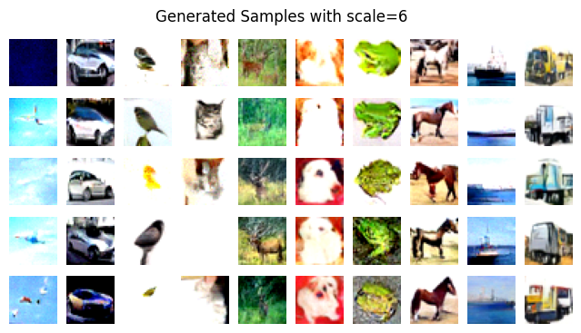

18. Denoising diffusion probabilistic model#
import torch
import torch.nn as nn
import torch.optim as optim
import numpy as np
import matplotlib.pyplot as plt
import math
import torch.nn.functional as F
import torchvision
import torchvision.transforms as transforms
# transform = transforms.Compose([
# transforms.ToTensor(),
# transforms.Normalize((0.5, 0.5, 0.5), (0.5, 0.5, 0.5)) # Normalize for 3 channels (RGB)
# ])
# trainset = torchvision.datasets.CIFAR10(root='./data', train=True,
# download=True, transform=transform)
# trainloader = torch.utils.data.DataLoader(trainset, batch_size=32,
# shuffle=True)
transform = transforms.Compose([
transforms.Resize((32, 32)), # Resize images to 32x32
transforms.ToTensor(),
transforms.Normalize((0.5,), (0.5,)) # Normalize for 1 channel (grayscale)
])
# Load the MNIST dataset
trainset = torchvision.datasets.MNIST(root='./data', train=True,
download=True, transform=transform)
trainloader = torch.utils.data.DataLoader(trainset, batch_size=32,
shuffle=True)
DEVICE = torch.device("cuda" if torch.cuda.is_available() else "cpu")
/usr/local/lib/python3.10/dist-packages/tqdm/auto.py:21: TqdmWarning: IProgress not found. Please update jupyter and ipywidgets. See https://ipywidgets.readthedocs.io/en/stable/user_install.html
from .autonotebook import tqdm as notebook_tqdm
class SelfAttention(nn.Module):
def __init__(self, in_channels, n_heads):
super(SelfAttention, self).__init__()
self.attention = nn.MultiheadAttention(in_channels, n_heads, batch_first=True)
self.layernorm = nn.LayerNorm([in_channels])
def forward(self, x):
B, C, H, W = x.shape
x = x.permute(0, 2, 3, 1).view(B, H*W, C)
x = self.layernorm(x)
attn, _ = self.attention(x, x, x)
x = (x + attn).view(B, H, W, C).permute(0, 3, 1, 2)
return x
class DoubleConv2d(nn.Module):
def __init__(self, in_channels, hidden_channels, out_channels, residual=False):
super(DoubleConv2d, self).__init__()
self.net = nn.Sequential(nn.Conv2d(in_channels, hidden_channels, kernel_size=3, padding=1, bias=False),
nn.GroupNorm(1, hidden_channels),
nn.GELU(),
nn.Conv2d(hidden_channels, out_channels, kernel_size=3, padding=1, bias=False),
nn.GroupNorm(1, out_channels))
self.residual = residual
def forward(self, x):
if self.residual:
return F.gelu(x + self.net(x))
return self.net(x)
class DownBlock(nn.Module):
def __init__(self, in_channels, out_channels, embed_dim):
super(DownBlock, self).__init__()
self.net = nn.Sequential(nn.MaxPool2d(2),
DoubleConv2d(in_channels, in_channels, in_channels, residual=True),
DoubleConv2d(in_channels, out_channels, out_channels))
self.resize = nn.Sequential(
nn.SiLU(),
nn.Linear(embed_dim, out_channels))
def forward(self, x, t):
x = self.net(x)
t = self.resize(t)[:, :, None, None].repeat(1, 1, x.shape[-2], x.shape[-1])
return x + t
class UpBlock(nn.Module):
def __init__(self, in_channels, out_channels, embed_dim):
super(UpBlock, self).__init__()
self.upsample = nn.Upsample(scale_factor=2, mode='bilinear', align_corners=True)
self.net = nn.Sequential(DoubleConv2d(in_channels, in_channels, in_channels, residual=True),
DoubleConv2d(in_channels, in_channels // 2, out_channels))
self.resize = nn.Sequential(
nn.SiLU(),
nn.Linear(embed_dim, out_channels))
def forward(self, x, x_skip, t):
x = self.upsample(x)
x = torch.cat([x_skip, x], dim=1)
x = self.net(x)
t = self.resize(t)[:, :, None, None].repeat(1, 1, x.shape[-2], x.shape[-1])
return x + t
def timestep_embedding(timesteps, dim, max_period=10000):
half_dim = dim // 2
freqs = torch.exp(-math.log(max_period) * torch.arange(0, half_dim, dtype=torch.float32, device=DEVICE) / half_dim)
args = timesteps[:, None].float() * freqs[None]
embedding = torch.cat([torch.cos(args), torch.sin(args)], dim=-1)
if dim % 2:
embedding = torch.cat([embedding, torch.zeros_like(embedding[:, :1])], dim=-1)
return embedding
class UNet(nn.Module):
def __init__(self, in_channels, embed_dim, n_heads, timesteps, device="cpu"):
super(UNet, self).__init__()
self.in_conv = DoubleConv2d(in_channels, 64, 64)
self.down1 = DownBlock(64, 128, embed_dim)
self.down2 = DownBlock(128, 256, embed_dim)
self.down3 = DownBlock(256, 256, embed_dim)
self.down_attn1 = SelfAttention(128, n_heads)
self.down_attn2 = SelfAttention(256, n_heads)
self.down_attn3 = SelfAttention(256, n_heads)
self.bottleneck1 = DoubleConv2d(256, 512, 512)
self.bottleneck2 = DoubleConv2d(512, 512, 512)
self.bottleneck3 = DoubleConv2d(512, 256, 256)
self.up3 = UpBlock(512, 128, embed_dim)
self.up2 = UpBlock(256, 64, embed_dim)
self.up1 = UpBlock(128, 64, embed_dim)
self.up_attn3 = SelfAttention(128, n_heads)
self.up_attn2 = SelfAttention(64, n_heads)
self.up_attn1 = SelfAttention(64, n_heads)
self.out_conv = nn.Conv2d(64, in_channels, kernel_size=1)
self.embed_dim = embed_dim
self.timesteps = timesteps
self.device = device
def forward(self, x, t):
t = timestep_embedding(t, self.embed_dim)
## Prepare for downsample path
x0 = self.in_conv(x)
## Start downsampling
x1 = self.down_attn1(self.down1(x0, t))
x2 = self.down_attn2(self.down2(x1, t))
x3 = self.down_attn3(self.down3(x2, t))
## Bottleneck
x3 = self.bottleneck1(x3)
x3 = self.bottleneck2(x3)
x3 = self.bottleneck3(x3)
## Upsample
x2 = self.up_attn3(self.up3(x3, x2, t))
x1 = self.up_attn2(self.up2(x2, x1, t))
x0 = self.up_attn1(self.up1(x1, x0, t))
x0 = self.out_conv(x0)
return x0
class Diffusion(nn.Module):
def __init__(self, in_channels, embed_dim, n_heads, img_size, timesteps, beta_min, beta_max, device="cpu"):
super(Diffusion, self).__init__()
self.unet = UNet(in_channels, embed_dim, n_heads, timesteps, device=device)
self.beta = torch.linspace(beta_min, beta_max, timesteps).to(device)
self.alpha = 1 - self.beta
self.alpha_ = torch.cumprod(self.alpha, dim=0)
self.img_size = img_size
self.in_channels = in_channels
self.timesteps = timesteps
self.device = device
def forward(self, x, t):
noise = torch.randn_like(x, device=self.device).to(self.device)
noised_x = torch.sqrt(self.alpha_[t])[:, None, None, None] * x + torch.sqrt(1 - self.alpha_[t])[:, None, None, None] * noise
return noised_x, noise
def sample(self, n_samples):
self.unet.eval()
with torch.no_grad():
x = torch.randn(n_samples, self.in_channels, self.img_size, self.img_size).to(self.device)
for t in reversed(range(1, self.timesteps)):
time = (t * torch.ones(n_samples, device=self.device)).long()
pred_noise = self.unet(x, time)
alpha, alpha_, beta = self.alpha[time], self.alpha_[time], self.beta[time]
alpha = alpha[:, None, None, None]
alpha_ = alpha_[:, None, None, None]
beta = beta[:, None, None, None]
noise = torch.randn(x.shape) if t > 1 else torch.zeros_like(x)
noise = noise.to(self.device)
x = 1 / torch.sqrt(alpha) * (x - ((1 - alpha) / (torch.sqrt(1 - alpha_))) * pred_noise) + torch.sqrt(beta) * noise
self.unet.train()
x = (x.clamp(-1, 1) + 1) / 2
x = (x * 255).type(torch.uint8)
return x
def plot_samples(samples, title="Generated images"):
samples = samples.permute(0, 2, 3, 1)
samples = samples.detach().cpu().numpy()
fig, ax = plt.subplots(1, 6, figsize=(12, 2))
fig.suptitle(title, fontsize=16)
for i in range(6):
ax[i].imshow(samples[i])
ax[i].axis('off')
plt.show()
def train_epoch(model, dataloader, optimizer, device="cpu"):
model.train()
model.unet.train()
train_loss = 0.0
for i, (X, _) in enumerate(dataloader):
t = torch.randint(1, model.timesteps, (X.shape[0], ), device=device)
X = X.to(device).float()
X_noised, noise = model(X, t)
time = t
pred_noise = model.unet(X_noised, time)
optimizer.zero_grad()
loss = nn.MSELoss()(noise, pred_noise)
loss.backward()
optimizer.step()
train_loss += loss.item()
return train_loss / len(dataloader)
def train(model, dataloader, optimizer, n_epoch, device="cpu"):
for epoch in range(n_epoch):
train_loss = train_epoch(model, dataloader, optimizer, device)
samples = model.sample(6)
plot_samples(samples, f"Epoch {epoch+1} Generated images, train loss: {train_loss}")
model = Diffusion(in_channels=1, embed_dim=256, n_heads=4, img_size=32, timesteps=1000, beta_min=1e-4, beta_max=0.02, device=DEVICE)
model.to(DEVICE)
optimizer = optim.Adam(model.unet.parameters(), lr=1e-4)
train(model, trainloader, optimizer, 10, device=DEVICE)
model.eval()
n_samples=36
samples = model.sample(n_samples).permute(0, 2, 3, 1)
samples = samples.detach().cpu().numpy()
grid_size = int(np.sqrt(n_samples))
fig, axes = plt.subplots(grid_size, grid_size, figsize=(6, 6))
axes = axes.flatten()
for i in range(n_samples):
axes[i].imshow(samples[i], cmap='gray')
axes[i].axis('off')
plt.subplots_adjust(wspace=0.1, hspace=0.1)
plt.show()
model = Diffusion(in_channels=3, embed_dim=256, n_heads=4, img_size=32, timesteps=1000, beta_min=1e-4, beta_max=0.02, device=DEVICE)
model.to(DEVICE)
model.load_state_dict(torch.load("Diffusion/diffusion_model_cifar10.pt"))
<All keys matched successfully>
model = Diffusion(in_channels=3, embed_dim=256, n_heads=4, img_size=32, timesteps=1000, beta_min=1e-4, beta_max=0.02, device=DEVICE)
model.to(DEVICE)
optimizer = optim.Adam(model.unet.parameters(), lr=1e-4)
train(model, trainloader, optimizer, 10, device=DEVICE)
model.eval()
n_samples=36
samples = model.sample(n_samples).permute(0, 2, 3, 1)
samples = samples.detach().cpu().numpy()
grid_size = int(np.sqrt(n_samples))
fig, axes = plt.subplots(grid_size, grid_size, figsize=(6, 6))
axes = axes.flatten()
for i in range(n_samples):
axes[i].imshow(samples[i])
axes[i].axis('off')
plt.subplots_adjust(wspace=0.1, hspace=0.1)
plt.show()
18.1. Classifier free guidance#
class UNetConditional(nn.Module):
def __init__(self, in_channels, embed_dim, n_heads, timesteps, n_classes, device="cpu"):
super(UNetConditional, self).__init__()
self.in_conv = DoubleConv2d(in_channels, 64, 64)
self.down1 = DownBlock(64, 128, embed_dim)
self.down2 = DownBlock(128, 256, embed_dim)
self.down3 = DownBlock(256, 256, embed_dim)
self.down_attn1 = SelfAttention(128, n_heads)
self.down_attn2 = SelfAttention(256, n_heads)
self.down_attn3 = SelfAttention(256, n_heads)
self.bottleneck1 = DoubleConv2d(256, 512, 512)
self.bottleneck2 = DoubleConv2d(512, 512, 512)
self.bottleneck3 = DoubleConv2d(512, 256, 256)
self.up3 = UpBlock(512, 128, embed_dim)
self.up2 = UpBlock(256, 64, embed_dim)
self.up1 = UpBlock(128, 64, embed_dim)
self.up_attn3 = SelfAttention(128, n_heads)
self.up_attn2 = SelfAttention(64, n_heads)
self.up_attn1 = SelfAttention(64, n_heads)
self.out_conv = nn.Conv2d(64, in_channels, kernel_size=1)
self.class_embed = nn.Embedding(n_classes, embed_dim)
self.embed_dim = embed_dim
self.timesteps = timesteps
self.device = device
def forward(self, x, t, label):
t = timestep_embedding(t, self.embed_dim)
if label is not None:
t += self.class_embed(label)
## Prepare for downsample path
x0 = self.in_conv(x)
## Start downsampling
x1 = self.down_attn1(self.down1(x0, t))
x2 = self.down_attn2(self.down2(x1, t))
x3 = self.down_attn3(self.down3(x2, t))
## Bottleneck
x3 = self.bottleneck1(x3)
x3 = self.bottleneck2(x3)
x3 = self.bottleneck3(x3)
## Upsample
x2 = self.up_attn3(self.up3(x3, x2, t))
x1 = self.up_attn2(self.up2(x2, x1, t))
x0 = self.up_attn1(self.up1(x1, x0, t))
x0 = self.out_conv(x0)
return x0
class Diffusion(nn.Module):
def __init__(self, in_channels, embed_dim, n_heads, img_size, timesteps, beta_min, beta_max, device="cpu"):
super(Diffusion, self).__init__()
self.unet = UNetConditional(in_channels, embed_dim, n_heads, timesteps, n_classes=10, device=device)
self.beta = torch.linspace(beta_min, beta_max, timesteps).to(device)
self.alpha = 1 - self.beta
self.alpha_ = torch.cumprod(self.alpha, dim=0)
self.img_size = img_size
self.in_channels = in_channels
self.timesteps = timesteps
self.device = device
def forward(self, x, t):
noise = torch.randn_like(x, device=self.device).to(self.device)
noised_x = torch.sqrt(self.alpha_[t])[:, None, None, None] * x + torch.sqrt(1 - self.alpha_[t])[:, None, None, None] * noise
return noised_x, noise
def sample(self, n_samples, labels, scale=3):
self.unet.eval()
with torch.no_grad():
x = torch.randn(n_samples, self.in_channels, self.img_size, self.img_size).to(self.device)
for t in reversed(range(1, self.timesteps)):
time = (t * torch.ones(n_samples, device=self.device)).long()
cond_pred_noise = self.unet(x, time, labels)
uncond_pred_noise = self.unet(x, time, None)
pred_noise = torch.lerp(uncond_pred_noise, cond_pred_noise, scale)
alpha, alpha_, beta = self.alpha[time], self.alpha_[time], self.beta[time]
alpha = alpha[:, None, None, None]
alpha_ = alpha_[:, None, None, None]
beta = beta[:, None, None, None]
noise = torch.randn(x.shape) if t > 1 else torch.zeros_like(x)
noise = noise.to(self.device)
x = 1 / torch.sqrt(alpha) * (x - ((1 - alpha) / (torch.sqrt(1 - alpha_))) * pred_noise) + torch.sqrt(beta) * noise
self.unet.train()
x = (x.clamp(-1, 1) + 1) / 2
x = (x * 255).type(torch.uint8)
return x
def plot_samples(samples, title="Generated images"):
samples = samples.permute(0, 2, 3, 1)
samples = samples.detach().cpu().numpy()
fig, ax = plt.subplots(1, 6, figsize=(12, 2))
fig.suptitle(title, fontsize=16)
for i in range(6):
ax[i].imshow(samples[i])
ax[i].axis('off')
plt.show()
def train_epoch(model, dataloader, optimizer, device="cpu"):
model.train()
model.unet.train()
train_loss = 0.0
for i, (X, labels) in enumerate(dataloader):
t = torch.randint(1, model.timesteps, (X.shape[0], ), device=device)
X = X.to(device).float()
labels = labels.to(device).long()
X_noised, noise = model(X, t)
time = t
if np.random.random() < 0.1:
labels = None
pred_noise = model.unet(X_noised, time, labels)
optimizer.zero_grad()
loss = nn.MSELoss()(noise, pred_noise)
loss.backward()
optimizer.step()
train_loss += loss.item()
return train_loss / len(dataloader)
def train(model, dataloader, optimizer, n_epoch, device="cpu"):
for epoch in range(n_epoch):
train_loss = train_epoch(model, dataloader, optimizer, device)
labels = torch.randint(0, 10, (6, )).to(device)
samples = model.sample(6, labels)
plot_samples(samples, f"Epoch {epoch+1} Generated images, train loss: {train_loss}")
model = Diffusion(in_channels=1, embed_dim=256, n_heads=4, img_size=32, timesteps=1000, beta_min=1e-4, beta_max=0.02, device=DEVICE)
model.to(DEVICE)
optimizer = optim.Adam(model.unet.parameters(), lr=5e-5)
train(model, trainloader, optimizer, 30, device=DEVICE)


---------------------------------------------------------------------------
KeyboardInterrupt Traceback (most recent call last)
Cell In[14], line 1
----> 1 train(model, trainloader, optimizer, 30, device=DEVICE)
Cell In[12], line 33, in train(model, dataloader, optimizer, n_epoch, device)
31 def train(model, dataloader, optimizer, n_epoch, device="cpu"):
32 for epoch in range(n_epoch):
---> 33 train_loss = train_epoch(model, dataloader, optimizer, device)
34 labels = torch.randint(0, 10, (6, )).to(device)
35 samples = model.sample(6, labels)
Cell In[12], line 15, in train_epoch(model, dataloader, optimizer, device)
13 model.unet.train()
14 train_loss = 0.0
---> 15 for i, (X, labels) in enumerate(dataloader):
16 t = torch.randint(1, model.timesteps, (X.shape[0], ), device=device)
17 X = X.to(device).float()
File /usr/local/lib/python3.10/dist-packages/torch/utils/data/dataloader.py:631, in _BaseDataLoaderIter.__next__(self)
628 if self._sampler_iter is None:
629 # TODO(https://github.com/pytorch/pytorch/issues/76750)
630 self._reset() # type: ignore[call-arg]
--> 631 data = self._next_data()
632 self._num_yielded += 1
633 if self._dataset_kind == _DatasetKind.Iterable and \
634 self._IterableDataset_len_called is not None and \
635 self._num_yielded > self._IterableDataset_len_called:
File /usr/local/lib/python3.10/dist-packages/torch/utils/data/dataloader.py:675, in _SingleProcessDataLoaderIter._next_data(self)
673 def _next_data(self):
674 index = self._next_index() # may raise StopIteration
--> 675 data = self._dataset_fetcher.fetch(index) # may raise StopIteration
676 if self._pin_memory:
677 data = _utils.pin_memory.pin_memory(data, self._pin_memory_device)
File /usr/local/lib/python3.10/dist-packages/torch/utils/data/_utils/fetch.py:51, in _MapDatasetFetcher.fetch(self, possibly_batched_index)
49 data = self.dataset.__getitems__(possibly_batched_index)
50 else:
---> 51 data = [self.dataset[idx] for idx in possibly_batched_index]
52 else:
53 data = self.dataset[possibly_batched_index]
File /usr/local/lib/python3.10/dist-packages/torch/utils/data/_utils/fetch.py:51, in <listcomp>(.0)
49 data = self.dataset.__getitems__(possibly_batched_index)
50 else:
---> 51 data = [self.dataset[idx] for idx in possibly_batched_index]
52 else:
53 data = self.dataset[possibly_batched_index]
File /usr/local/lib/python3.10/dist-packages/torchvision/datasets/mnist.py:146, in MNIST.__getitem__(self, index)
143 img = Image.fromarray(img.numpy(), mode="L")
145 if self.transform is not None:
--> 146 img = self.transform(img)
148 if self.target_transform is not None:
149 target = self.target_transform(target)
File /usr/local/lib/python3.10/dist-packages/torchvision/transforms/transforms.py:95, in Compose.__call__(self, img)
93 def __call__(self, img):
94 for t in self.transforms:
---> 95 img = t(img)
96 return img
File /usr/local/lib/python3.10/dist-packages/torchvision/transforms/transforms.py:137, in ToTensor.__call__(self, pic)
129 def __call__(self, pic):
130 """
131 Args:
132 pic (PIL Image or numpy.ndarray): Image to be converted to tensor.
(...)
135 Tensor: Converted image.
136 """
--> 137 return F.to_tensor(pic)
File /usr/local/lib/python3.10/dist-packages/torchvision/transforms/functional.py:176, in to_tensor(pic)
174 img = img.permute((2, 0, 1)).contiguous()
175 if isinstance(img, torch.ByteTensor):
--> 176 return img.to(dtype=default_float_dtype).div(255)
177 else:
178 return img
KeyboardInterrupt:
torch.save(model.state_dict(), "diffusion_model_mnist_cfg.pt")
fig, ax = plt.subplots(5, 10, figsize=(8, 4))
fig.suptitle('Generated Samples with scale=1', fontsize=12)
for i in range(5):
samples = model.sample(10, torch.tensor(np.arange(10), device=DEVICE), scale=1)
samples = samples.permute(0, 2, 3, 1).detach().cpu().numpy()
for j in range(10):
ax[i, j].imshow(samples[j], cmap="gray")
ax[i, j].axis("off")
plt.subplots_adjust(top=0.9)

fig, ax = plt.subplots(5, 10, figsize=(8, 4))
fig.suptitle('Generated Samples with scale=3', fontsize=12)
for i in range(5):
samples = model.sample(10, torch.tensor(np.arange(10), device=DEVICE), scale=3)
samples = samples.permute(0, 2, 3, 1).detach().cpu().numpy()
for j in range(10):
ax[i, j].imshow(samples[j], cmap="gray")
ax[i, j].axis("off")
plt.subplots_adjust(top=0.9)

fig, ax = plt.subplots(5, 10, figsize=(8, 4))
fig.suptitle('Generated Samples with scale=6', fontsize=12)
for i in range(5):
samples = model.sample(10, torch.tensor(np.arange(10), device=DEVICE), scale=6)
samples = samples.permute(0, 2, 3, 1).detach().cpu().numpy()
for j in range(10):
ax[i, j].imshow(samples[j], cmap="gray")
ax[i, j].axis("off")
plt.subplots_adjust(top=0.9)

fig, ax = plt.subplots(5, 10, figsize=(8, 4))
fig.suptitle('Generated Samples with scale=1', fontsize=12)
for i in range(5):
samples = model.sample(10, torch.tensor(np.arange(10), device=DEVICE), scale=1)
samples = samples.permute(0, 2, 3, 1).detach().cpu().numpy()
for j in range(10):
ax[i, j].imshow(samples[j], cmap="gray")
ax[i, j].axis("off")
plt.subplots_adjust(top=0.9)

fig, ax = plt.subplots(5, 10, figsize=(8, 4))
fig.suptitle('Generated Samples with scale=3', fontsize=12)
for i in range(5):
samples = model.sample(10, torch.tensor(np.arange(10), device=DEVICE), scale=3)
samples = samples.permute(0, 2, 3, 1).detach().cpu().numpy()
for j in range(10):
ax[i, j].imshow(samples[j], cmap="gray")
ax[i, j].axis("off")
plt.subplots_adjust(top=0.9)

fig, ax = plt.subplots(5, 10, figsize=(8, 4))
fig.suptitle('Generated Samples with scale=6', fontsize=12)
for i in range(5):
samples = model.sample(10, torch.tensor(np.arange(10), device=DEVICE), scale=6)
samples = samples.permute(0, 2, 3, 1).detach().cpu().numpy()
for j in range(10):
ax[i, j].imshow(samples[j], cmap="gray")
ax[i, j].axis("off")
plt.subplots_adjust(top=0.9)
